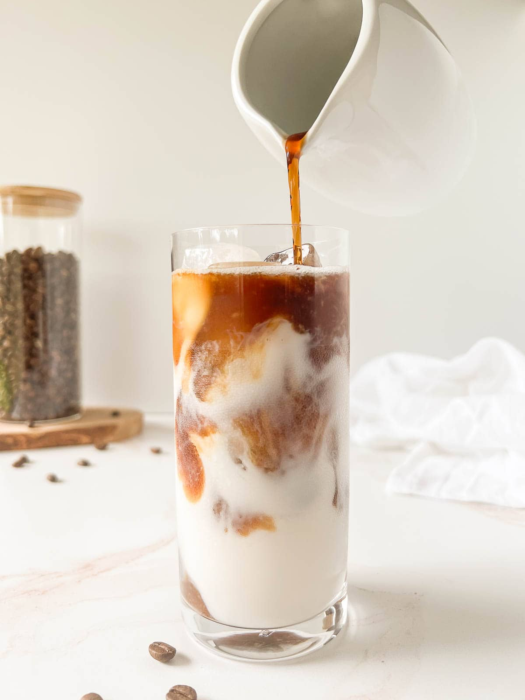
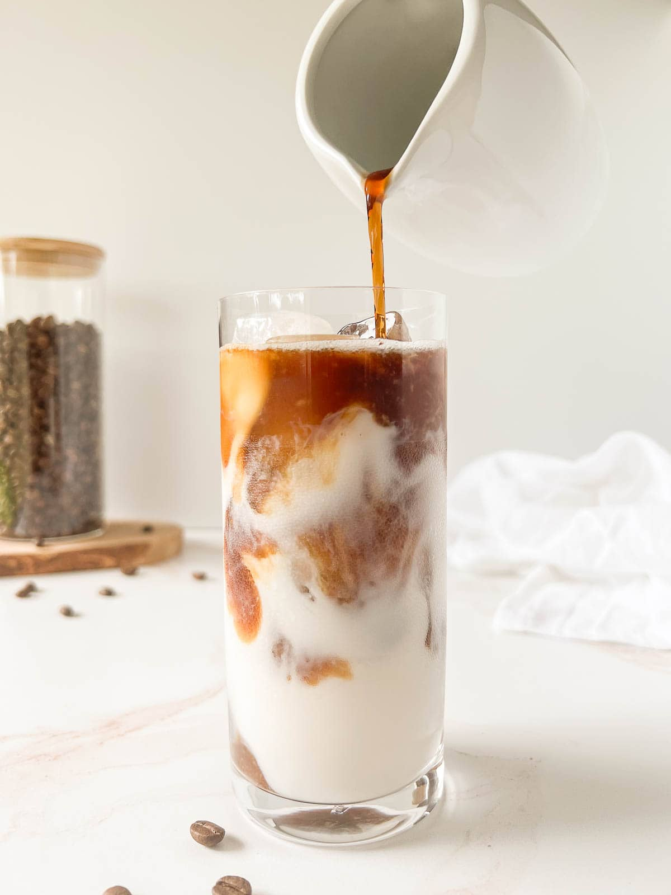
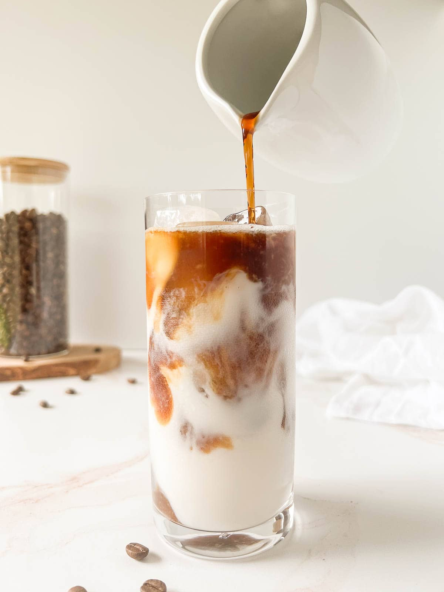

The iconic latte is loved in coffee shops all over the world. The subtle coffee taste and creamy texture makes it a coffee that’s universally cherished by even the most casual of coffee drinkers.
A latte is a coffee drink that originated in Italy and is made with espresso, steamed milk, and a thin layer of frothed milk on top. The drink is usually served in a glass and has a smooth texture and a balanced milky flavor.
Ingredients:
A latte is typically made with one or two shots of espresso, which is about one-third of the drink, and two-thirds steamed milk.
Texture:
The texture of a latte is important and gives the drink its appearance. The milk is steamed to create fine bubbles, or microfoam, which can be poured to create patterns in the drink.
Sweeteners:
In the United States, lattes are often sweetened with refined white sugar, artificial sweeteners, or agave syrup.
Variations:
You can also make lattes with other ingredients besides espresso, such as rooibos or chai. For example, a matcha latte is made with matcha green tea.
